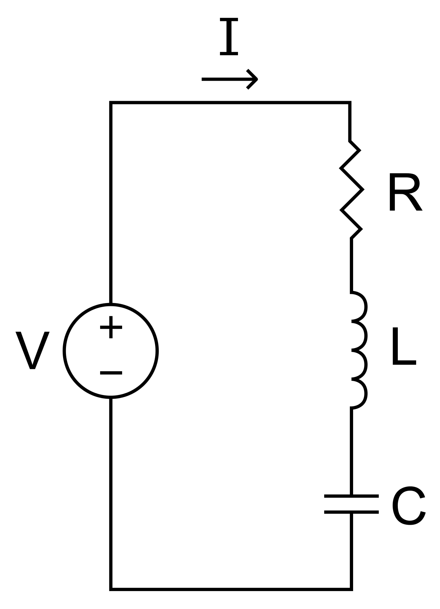
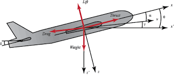
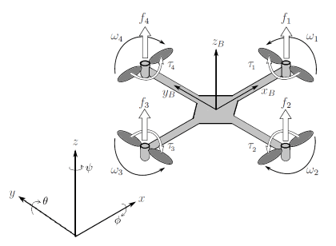
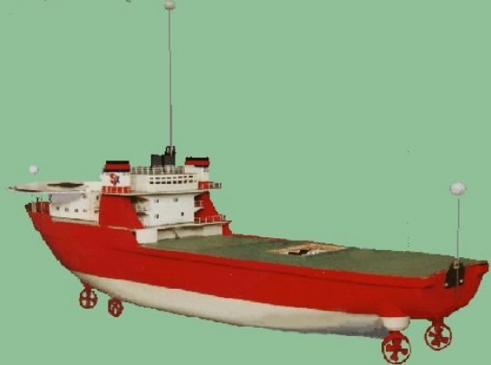
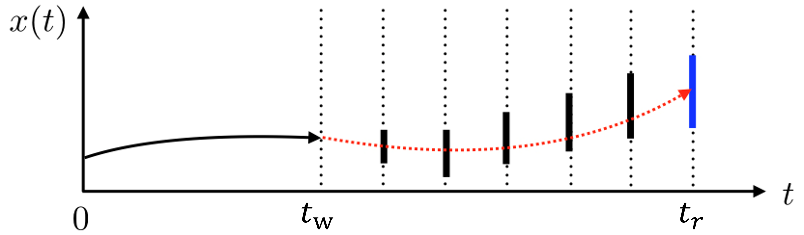
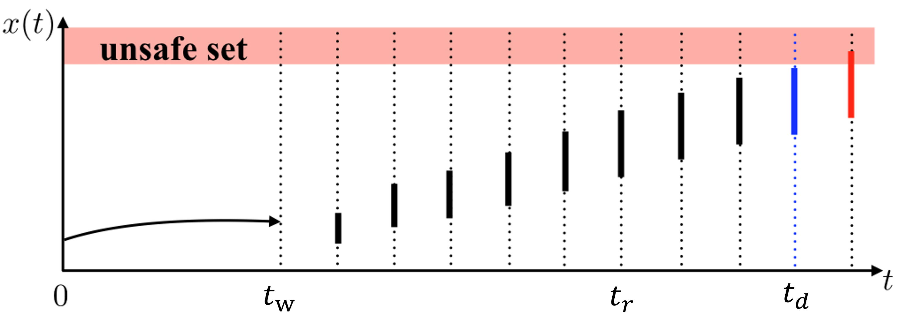

Built-in Components
Warning
This page is under construction and will be ready later.
Linear System Models
System |
# States |
# control inputs |
# outputs |
|---|---|---|---|
2 |
1 |
1 |
|
2 |
1 |
1 |
|
3 |
1 |
1 |
|
12 |
4 |
1 |
1. Motor Speed [1]_
A common actuator in control systems is the DC motor. It directly provides rotary motion and, coupled with wheels or drums and cables, can provide translational motion. The electric equivalent circuit of the armature and the free-body diagram of the rotor are shown in the following figure.

State-space model:
where \(\theta\) is the angular position of the motor shaft, \(i\) is the current through the motor, \(V\) is the voltage applied to the motor, \(J=0.01 kg.m^2\) is the moment of inertia of the motor, \(b=0.1 N.m.s\) is the motor viscous friction constant, \(K=0.01 N.m/Amp\) is the motor torque constant, and \(R=1 Ohm\) and \(L0.5 H\) are the electrical resistance and inductance of the motor, respectively.
2. RLC Circuit [2]_
A basic RLC circuit contains a resistor, an inductor, and a capacitor connected in series. An adjustable voltage source is connected to form a closed loop circuit. The system dynamics are modeled by the right equation such that state \(x_1\) denotes the voltage across the capacitor and state \(x_2\) denotes the electric current in the loop. The control input \(u\) is considered the voltage of the voltage source.
{kind=link}
State-space model:
3. Aircraft Pitch [2]_
The system ODE describes the longitudinal dynamics of motion for the aircraft. The \(x_1\) denotes the angle of attack, \(x_2\) denotes the pitch rate, and \(x_3\) denotes the pitch angle. The control input \(u\) is the elevator deflection angle.
{kind=link}
State-space model:
4. Quadrotor [3]
We consider a linear quadrotor model described in [3]. The system consists of 12 state variables: \((x, y, z)\) denotes the (relative) position, \((𝜙, θ, ψ)\) denotes the angles of roll, pitch and yaw respectively, \((u, v, w)\) and \((p, q, r)\) are the velocity and angular velocity of the quadrotor. The controller produces 4 inputs which are ft: total thrust, and \([τ_x, τ_y, τ_z]\) control torques caused by differences of rotor speeds.
{kind=link}
References:
Nonlinear System Models
1. Quadrotor
The nonlinear dynamics of the quadrotor relate its attitude and position with 12 states same as the linear quadrotor model above.
2. Vessel
The vessel dynamics characterize a standard ship with 3 degrees of freedom. The state-space model is derived from the Marine Cybernetics lecture notes, and the high-fidelity simulator is based on the NTNU AUR-lab’s development, incorporating Matlab scripts from the VESSELS catalog of the MSS toolbox. The simulator replicates the vessel with essential ship components such as the engine, propeller, and rudder, treating the entire model as a system. The system comprises 8 states, including east and north positions, yaw, their velocities, the angular shaft speed of the propeller, and the DC motor’s current.
{kind=link}
References:
3. Pendulum
The dynamics of the inverted pendulum on a cart is described by a nonlinear model. The objective is to stabilize the inverted pendulum towards the upright position by applying force to the cart. The cart position is denoted by x, velocity by v, pendulum angle by θ, angular velocity by ω, pendulum mass by m, cart mass by M, pendulum arm by L, gravitational acceleration by g, friction damping on the cart by δ, and control force applied to the cart by u.
{kind=link}
4. CSTR
In the dynamics of a CSTR, the exothermic reaction of species A → B is analyzed using the concentration of A (\(C_A\)) and the reactor temperature (\(T\)) as states. The control input is determined by the temperature of the cooling jacket (\(T_C\)). The precise dynamics, considering different system parameters are outlined below.
{kind=link}
References:
Controllers
PID
A proportional–integral–derivative controller (PID controller or three-term controller) is a control loop mechanism employing feedback that is widely used in industrial control systems and a variety of other applications requiring continuously modulated control.
LQR
The settings of a (regulating) controller governing either a machine or process (like an airplane or chemical reactor) are found by using a mathematical algorithm that minimizes a cost function with weighting factors supplied by a human (engineer). The cost function is often defined as a sum of the deviations of key measurements, like altitude or process temperature, from their desired values. The algorithm thus finds those controller settings that minimize undesired deviations. The magnitude of the control action itself may also be included in the cost function.
MPC
Model predictive control (MPC) is an optimal control technique in which the calculated control actions minimize a cost function for a constrained dynamical system over a finite, receding, horizon.
Formal Methods
Safety Analysis
When applying a sequence of control inputs \(\textbf{u}_0,\dots, \textbf{u}_{T-1} \in \mathcal{U}\) to a physical system, the system state evolves according to its dynamics \(\psi\), i.e., \(\textbf{x}_{t+1} = \psi (\textbf{x}_t,\textbf{u}_t)\). The sequence of evolving states is called emph{State Trajectory} \(\xi\), where \(\xi_i\) denotes the \(i\)-th state in the trajectory. By applying all possible control sequences within \(T\) control steps, we can have all possible state trajectories \(\Xi(\textbf{x}_0,T)\) as \(\Xi(\textbf{x}_0,T) = \{\xi:\xi_0=\textbf{x}_0, \xi_{t+1}=\psi (\xi_t,\textbf{u}_t)\}\), where \(\textbf{u}_t \in \mathcal{U}\), \(t \in \{0,\dots, T-1\}\), and \(\textbf{x}_0\) is an initial state. Then, the reachable set \(\mathcal{R}\) includes all possible system states in \(\Xi(\textbf{x}_0,T)\).
The Unsafe State Set \(\mathcal{F}\) is a region within the state space, in which the physical system is unsafe and may cause serious consequences. For example, the distance from a vehicle to an obstacle is less than zero where the unsafe state includes all negative distance values. The complementary set of \(\mathcal{F}\) is the safe state set \(\mathcal{S}\). To keep the system safe, the reachable set of a system from a certain initial state \(\textbf{x}_0\) is required not to intersect with the unsafe state set, i.e., \(\mathcal{R}\cap \mathcal{F}= \emptyset\). Unfortunately, it is very expensive to compute the exact reachable set. Instead, we usually compute an over-approximation of the reachable set, denoted by \(\bar{\mathcal{R}}\) and \(\bar{\mathcal{R}} \supseteq \mathcal{R}\). If \(\bar{\mathcal{R}} \cap \mathcal{F}=\emptyset\), then we can guarantee that \(\mathcal{R} \cap \mathcal{F}= \emptyset\), i.e., the system is guaranteed to be safe.
Reachability Analysis for Linear Systems
By utilizing the Taylor model-based reachability computation on a past state, we can obtain an overapproximate estimation of the state at a subsequent time. We begin by taking the most recent reliable state, \(x_w\), as the starting point. Next, we analyze the historical control sequence utilized from the time \(t_w\) to \(t_f\) and calculate an interval set (or box), \(X\). This set is guaranteed to contain the system state at \(t_f\).
State Estimate Reconstruction
At time \(t_f\) , the system state estimates cannot reflect the actual system states because of sensor attacks. Therefore, the predictor must rebuild the current state reachable set \(X_f\) from a reliable \(x_w\) state, as provided by the checkpointer.
{kind=link}
Deadline Estimation
We conduct reachability analysis to determine a deadline, \(t_d\), at which point the system may touch the unsafe set.
{kind=link}
Noise / Disturbance
We have implemented uniform noise.
Attack Simulator
We consider three attack scenarios: bias, delay, and replay. A bias attack typically involves intentionally introducing systematic errors or biases into a system. This type of attack is especially pertinent in systems relying on sensor data or algorithmic decision-making. A delay attack focuses on manipulating the timeliness of information within CPSs. The attacker intentionally introduces delays in transmitting vital data or commands, thereby causing a disruption in the regular operation of the system. A replay attack entails the capture of valid data transmissions, which are then retransmitted at a later time. The crucial element of this attack lies in the legitimacy of the data itself; however, it is reused or replayed at an unsuitable moment or in an incorrect context.